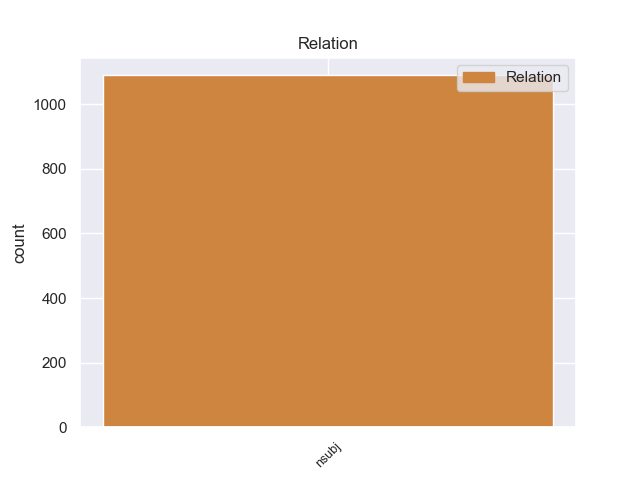
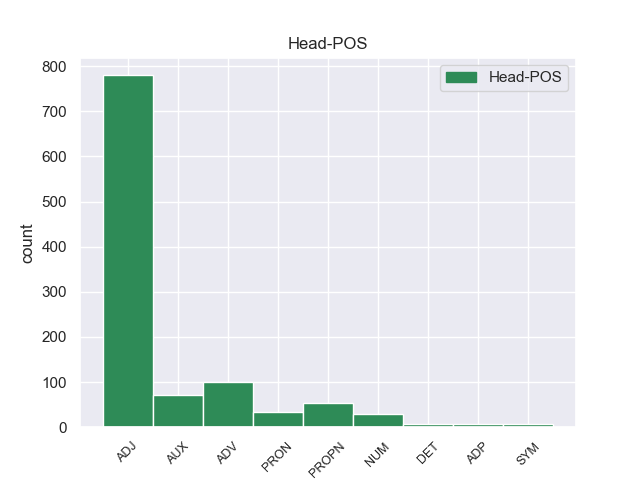
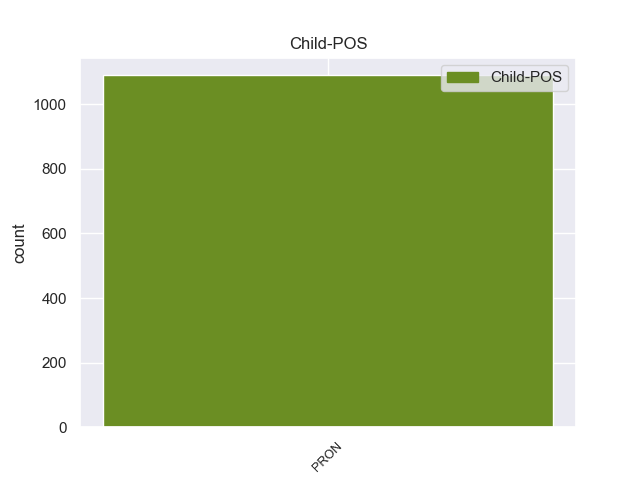

Distribution of features within this leaf



non-conforming Examples:
1 But _ _ _ _ 0 _ _ _
2 in _ _ _ _ 0 _ _ _
3 my _ _ _ _ 0 _ _ _
4 view _ _ _ _ 0 _ _ _
5 it it PRON PRP Case=Nom|Gender=Neut|Number=Sing|Person=3|PronType=Prs 8 nsubj 8:nsubj _
6 is _ _ _ _ 0 _ _ _
7 highly _ _ _ _ 0 _ _ _
8 significant significant ADJ JJ Degree=Pos 0 _ _ _
9 . _ _ _ _ 0 _ _ _
1 There _ _ _ _ 0 _ _ _
2 are _ _ _ _ 0 _ _ _
3 rumours _ _ _ _ 0 _ _ _
4 about _ _ _ _ 0 _ _ _
5 preparations _ _ _ _ 0 _ _ _
6 by _ _ _ _ 0 _ _ _
7 slum _ _ _ _ 0 _ _ _
8 dwellers _ _ _ _ 0 _ _ _
9 for _ _ _ _ 0 _ _ _
10 another _ _ _ _ 0 _ _ _
11 looting _ _ _ _ 0 _ _ _
12 spree _ _ _ _ 0 _ _ _
13 against _ _ _ _ 0 _ _ _
14 banks _ _ _ _ 0 _ _ _
15 , _ _ _ _ 0 _ _ _
16 governmental _ _ _ _ 0 _ _ _
17 and _ _ _ _ 0 _ _ _
18 public _ _ _ _ 0 _ _ _
19 property _ _ _ _ 0 _ _ _
20 similar _ _ _ _ 0 _ _ _
21 to _ _ _ _ 0 _ _ _
22 the _ _ _ _ 0 _ _ _
23 one _ _ _ _ 0 _ _ _
24 that _ _ _ _ 0 _ _ _
25 took _ _ _ _ 0 _ _ _
26 place _ _ _ _ 0 _ _ _
27 last _ _ _ _ 0 _ _ _
28 April _ _ _ _ 0 _ _ _
29 , _ _ _ _ 0 _ _ _
30 and _ _ _ _ 0 _ _ _
31 I _ _ _ _ 0 _ _ _
32 have _ _ _ _ 0 _ _ _
33 already _ _ _ _ 0 _ _ _
34 overheard _ _ _ _ 0 _ _ _
35 youngsters _ _ _ _ 0 _ _ _
36 in _ _ _ _ 0 _ _ _
37 my _ _ _ _ 0 _ _ _
38 neighbourhood _ _ _ _ 0 _ _ _
39 joking _ _ _ _ 0 _ _ _
40 about _ _ _ _ 0 _ _ _
41 it _ _ _ _ 0 _ _ _
42 and _ _ _ _ 0 _ _ _
43 saying _ _ _ _ 0 _ _ _
44 things _ _ _ _ 0 _ _ _
45 like _ _ _ _ 0 _ _ _
46 " _ _ _ _ 0 _ _ _
47 This _ _ _ _ 0 _ _ _
48 time _ _ _ _ 0 _ _ _
49 we we PRON PRP Case=Nom|Number=Plur|Person=1|PronType=Prs 53 nsubj 53:nsubj _
50 will _ _ _ _ 0 _ _ _
51 be _ _ _ _ 0 _ _ _
52 the _ _ _ _ 0 _ _ _
53 first first ADJ JJ Degree=Pos|NumType=Ord 0 _ _ _
54 to _ _ _ _ 0 _ _ _
55 loot _ _ _ _ 0 _ _ _
56 , _ _ _ _ 0 _ _ _
57 we _ _ _ _ 0 _ _ _
58 did _ _ _ _ 0 _ _ _
59 n't _ _ _ _ 0 _ _ _
60 get _ _ _ _ 0 _ _ _
61 anything _ _ _ _ 0 _ _ _
62 the _ _ _ _ 0 _ _ _
63 last _ _ _ _ 0 _ _ _
64 time _ _ _ _ 0 _ _ _
65 " _ _ _ _ 0 _ _ _
66 . _ _ _ _ 0 _ _ _
1 What _ _ _ _ 0 _ _ _
2 irritates _ _ _ _ 0 _ _ _
3 me _ _ _ _ 0 _ _ _
4 is _ _ _ _ 0 _ _ _
5 this _ _ _ _ 0 _ _ _
6 sudden _ _ _ _ 0 _ _ _
7 false _ _ _ _ 0 _ _ _
8 ' _ _ _ _ 0 _ _ _
9 solidarity _ _ _ _ 0 _ _ _
10 ' _ _ _ _ 0 _ _ _
11 between _ _ _ _ 0 _ _ _
12 Sunni _ _ _ _ 0 _ _ _
13 and _ _ _ _ 0 _ _ _
14 Shi'ite _ _ _ _ 0 _ _ _
15 clerics _ _ _ _ 0 _ _ _
16 , _ _ _ _ 0 _ _ _
17 we _ _ _ _ 0 _ _ _
18 all _ _ _ _ 0 _ _ _
19 know _ _ _ _ 0 _ _ _
20 that _ _ _ _ 0 _ _ _
21 they they PRON PRP Case=Nom|Number=Plur|Person=3|PronType=Prs 24 nsubj 24:nsubj _
22 would _ _ _ _ 0 _ _ _
23 be _ _ _ _ 0 _ _ _
24 glad glad ADJ JJ Degree=Pos 0 _ _ _
25 to _ _ _ _ 0 _ _ _
26 get _ _ _ _ 0 _ _ _
27 at _ _ _ _ 0 _ _ _
28 each _ _ _ _ 0 _ _ _
29 other _ _ _ _ 0 _ _ _
30 s _ _ _ _ 0 _ _ _
31 throats _ _ _ _ 0 _ _ _
32 when _ _ _ _ 0 _ _ _
33 they _ _ _ _ 0 _ _ _
34 have _ _ _ _ 0 _ _ _
35 the _ _ _ _ 0 _ _ _
36 chance _ _ _ _ 0 _ _ _
37 , _ _ _ _ 0 _ _ _
38 and _ _ _ _ 0 _ _ _
39 Shia _ _ _ _ 0 _ _ _
40 clerics _ _ _ _ 0 _ _ _
41 were _ _ _ _ 0 _ _ _
42 describing _ _ _ _ 0 _ _ _
43 Fallujan _ _ _ _ 0 _ _ _
44 insurgents _ _ _ _ 0 _ _ _
45 as _ _ _ _ 0 _ _ _
46 ' _ _ _ _ 0 _ _ _
47 Ba'athists _ _ _ _ 0 _ _ _
48 ' _ _ _ _ 0 _ _ _
49 , _ _ _ _ 0 _ _ _
50 ' _ _ _ _ 0 _ _ _
51 Saddamites _ _ _ _ 0 _ _ _
52 ' _ _ _ _ 0 _ _ _
53 , _ _ _ _ 0 _ _ _
54 ' _ _ _ _ 0 _ _ _
55 Wahhabis _ _ _ _ 0 _ _ _
56 ' _ _ _ _ 0 _ _ _
57 , _ _ _ _ 0 _ _ _
58 and _ _ _ _ 0 _ _ _
59 ' _ _ _ _ 0 _ _ _
60 terrorists _ _ _ _ 0 _ _ _
61 ' _ _ _ _ 0 _ _ _
62 just _ _ _ _ 0 _ _ _
63 a _ _ _ _ 0 _ _ _
64 few _ _ _ _ 0 _ _ _
65 days _ _ _ _ 0 _ _ _
66 ago _ _ _ _ 0 _ _ _
67 . _ _ _ _ 0 _ _ _
1 I I PRON PRP Case=Nom|Number=Sing|Person=1|PronType=Prs 4 nsubj 4:nsubj _
2 would _ _ _ _ 0 _ _ _
3 be _ _ _ _ 0 _ _ _
4 interested interested ADJ JJ Degree=Pos 0 _ _ _
5 in _ _ _ _ 0 _ _ _
6 hearing _ _ _ _ 0 _ _ _
7 what _ _ _ _ 0 _ _ _
8 conclusions _ _ _ _ 0 _ _ _
9 you _ _ _ _ 0 _ _ _
10 reached _ _ _ _ 0 _ _ _
11 and _ _ _ _ 0 _ _ _
12 what _ _ _ _ 0 _ _ _
13 you _ _ _ _ 0 _ _ _
14 found _ _ _ _ 0 _ _ _
15 that _ _ _ _ 0 _ _ _
16 was _ _ _ _ 0 _ _ _
17 most _ _ _ _ 0 _ _ _
18 convincing _ _ _ _ 0 _ _ _
19 . _ _ _ _ 0 _ _ _
1 I I PRON PRP Case=Nom|Number=Sing|Person=1|PronType=Prs 3 nsubj 3:nsubj|5:nsubj:xsubj SpaceAfter=No
2 'm _ _ _ _ 0 _ _ _
3 sorry sorry ADJ JJ Degree=Pos 0 _ _ _
4 to _ _ _ _ 0 _ _ _
5 say _ _ _ _ 0 _ _ _
6 Elena _ _ _ _ 0 _ _ _
7 's _ _ _ _ 0 _ _ _
8 story _ _ _ _ 0 _ _ _
9 has _ _ _ _ 0 _ _ _
10 been _ _ _ _ 0 _ _ _
11 revealed _ _ _ _ 0 _ _ _
12 to _ _ _ _ 0 _ _ _
13 be _ _ _ _ 0 _ _ _
14 a _ _ _ _ 0 _ _ _
15 fake _ _ _ _ 0 _ _ _
16 . _ _ _ _ 0 _ _ _